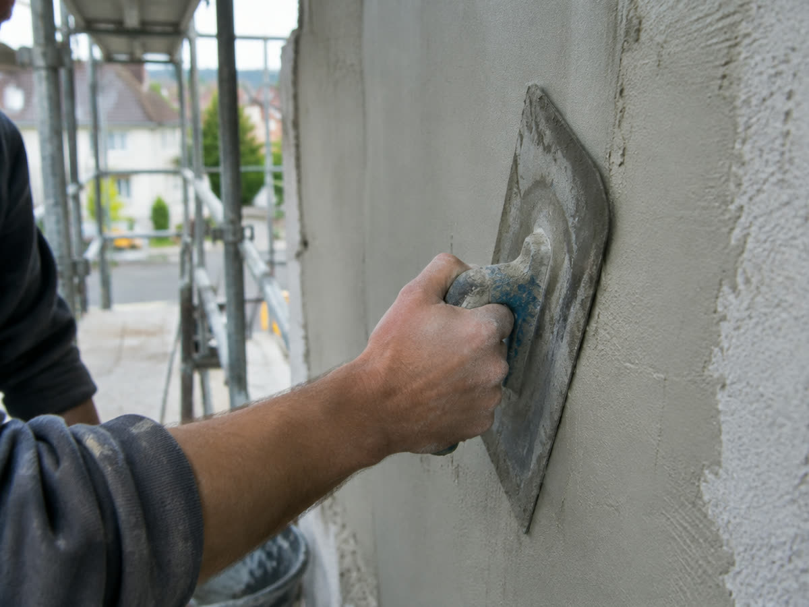

Warum Reels für lokale Betriebe funktionieren
Ein Betrieb mit zweihundert Followern kann ein Video mit zwanzigtausend Aufrufen haben. Warum das kein Zufall ist.
Ein Malerbetrieb mit zweihundert Followern veröffentlicht ein Video, in dem eine Wand in vierzig Sekunden von vergilbtem Raufaser zu glatter Fläche wird. Nach einer Woche hat das Video achtzehntausend Aufrufe, und in der Region kennen Leute den Betrieb, die vorher nie von ihm gehört hatten. Das ist kein Einzelfall und auch kein Glück. Es ist der Normalfall eines Formats, das anders ausgespielt wird als alles davor.
Für einen Betrieb mit Kundschaft aus der Umgebung ist das die wichtigste Veränderung der letzten Jahre. Wer sie verstanden hat, braucht weder Budget noch Reichweite, um gesehen zu werden. Er braucht nur regelmäßig etwas zu zeigen, das es wert ist.

Reichweite kommt nicht mehr von Followern
Bei klassischen Beiträgen entscheidet die Followerzahl darüber, wie viele Menschen etwas sehen. Wer zweihundert Follower hat, erreicht ein paar Dutzend davon, und damit ist die Sache erledigt. Das ist der Grund, warum die meisten Firmenprofile nach einem halben Jahr wieder einschlafen: Die Mühe steht in keinem Verhältnis zu den immer gleichen vierzig Aufrufen.
Kurzvideos funktionieren umgekehrt. Sie werden zuerst einer kleinen Gruppe gezeigt, die dem Profil gar nicht folgt. Bleiben diese Leute dran, zeigt die Plattform das Video der nächsten, größeren Gruppe. Bleiben die auch dran, geht es weiter. Die Followerzahl spielt dabei eine untergeordnete Rolle; entscheidend ist, wie lange Menschen zusehen.
Praktisch heißt das: Ein Betrieb ohne Publikum hat dieselbe Ausgangslage wie einer mit zehntausend Followern. Das ist für kleine Betriebe die beste Nachricht seit Langem, und sie ist der eigentliche Grund, warum sich das Format überhaupt lohnt.
Warum gerade Handwerk und Gastronomie im Vorteil sind
Kurzvideo belohnt Sehenswertes, und sehenswert ist vor allem sichtbare Veränderung. Eine Fläche, die sauber wird. Ein Teig, der aufgeht. Ein Rohbau, der an einem Tag ein Dach bekommt. Ein Werkstück, das aus einem Klotz entsteht. Genau das passiert in diesen Betrieben jeden Tag ohnehin, es wird nur nicht aufgenommen.
Ein Steuerbüro hat es an dieser Stelle schwerer als ein Dachdecker, und das sollte man ehrlich sagen. Dienstleistungen ohne sichtbares Ergebnis brauchen andere Ansätze: erklären, einordnen, Fragen beantworten. Das funktioniert auch, verlangt aber mehr Aufwand pro Video. Wer dagegen mit den Händen arbeitet, muss im Grunde nur noch die Kamera mitlaufen lassen.
Dazu kommt ein zweiter Vorteil, der oft übersehen wird. Wer vor der Beauftragung gesehen hat, wie jemand arbeitet und wie er redet, ruft mit anderer Haltung an. Das Gespräch beginnt nicht mehr bei der Frage, ob man einander trauen kann, sondern beim Termin. Was das für die Gesprächsführung bedeutet, merkt man meist schon nach wenigen Wochen.

Was ein Video tatsächlich leisten muss
Die Plattform misst vor allem eines: ob Menschen weiterschauen oder wegwischen. Daraus folgt alles Weitere. Die ersten beiden Sekunden entscheiden, ob überhaupt jemand bleibt. Wer dort erklärt, wer er ist und was seine Firma macht, hat verloren, bevor er angefangen hat. Mehr dazu steht im Beitrag über die ersten zwei Sekunden.
Danach zählt, dass etwas passiert. Kein Schwenk über ein leeres Ladenlokal, sondern eine Handlung mit Anfang und Ende. Und am Schluss braucht es einen nächsten Schritt, sonst entstehen Aufrufe und keine Anfragen. Ein Satz genügt: was man tun soll, wenn einem gefällt, was man gesehen hat.
Der häufigste Fehler liegt aber woanders. Die meisten Betriebe hören nach drei Wochen auf. Das Format braucht Wiederholung, weil nicht jedes Video läuft und weil die Plattform ein Profil erst einordnen muss. Wie viel Regelmäßigkeit wirklich nötig ist, steht unter Wie oft sollte man posten?
Was das kostet, wenn man es ernst meint
Ein brauchbares Reel entsteht nicht in fünf Minuten. Aufnehmen, auswählen, schneiden, Untertitel setzen, Ton anpassen: Wer es selbst macht, rechnet mit einer bis zwei Stunden pro Video, am Anfang mit mehr. Bei zehn Videos im Monat ist das ein spürbarer Teil einer Arbeitswoche, und zwar dauerhaft.
Deshalb ist die ehrliche Frage nicht, ob Reels funktionieren, sondern wer sie macht. Wer selbst Freude daran hat und die Zeit findet, braucht keine Agentur. Wer sie nicht findet, sollte es abgeben, statt es halbherzig zu versuchen. Die Abwägung steht ausführlich unter Selbst machen oder abgeben?, und was eine Betreuung kostet, unter Was kostet Social Media?
Was wir im Rahmen einer Betreuung übernehmen, vom Drehtag bis zur Veröffentlichung, steht unter Social Media Management. Ob das für Ihren Betrieb passt, klären wir im Erstgespräch.


Lernen wir uns kennen.
15 Minuten am Telefon oder per Video. Danach wissen Sie, ob und wie Social Media für Ihren Betrieb funktioniert.